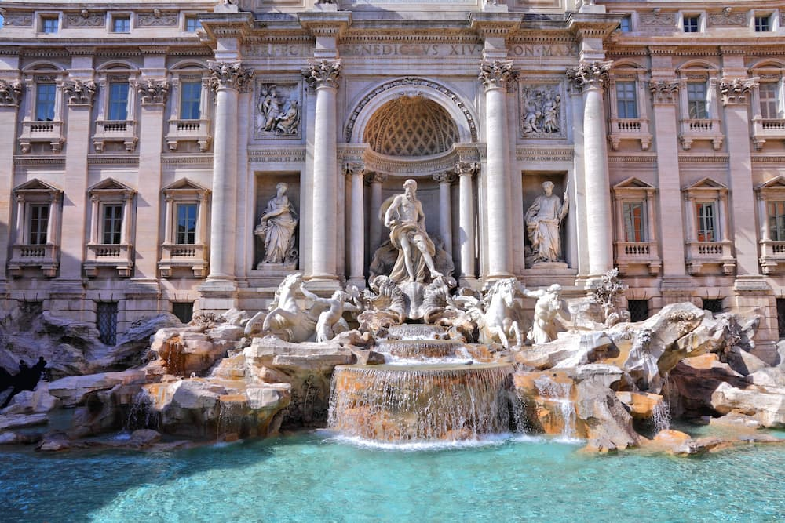

Actividades

Coliseo Romano
Descubre y vive la experiencia de adentrate en el auténtico Coliseo Romano. Lugar donde se reunía la población para ver espectáculos, y una de las 7 maravillas del mundo moderno.

Fontana de Trevi
Observa la maravillosa fuente, con sus espectaculares esculturas.

Boca de la verdad
Descubre uno de los lugares más interesantes de Roma. Atreveté a meter la mano y descubrir si eres completamente sincero.

Foro Romano
Adentrate en la ciudad antigua y descubre las ruinas más importantes de toda Roma.

Panteón Romano
Descubre el auténtico panteón romano. Descubre su belleza y secreto interior.

Vaticano
Entra en le vaticano y descubre todos sus museos y su belleza arquitectónica.